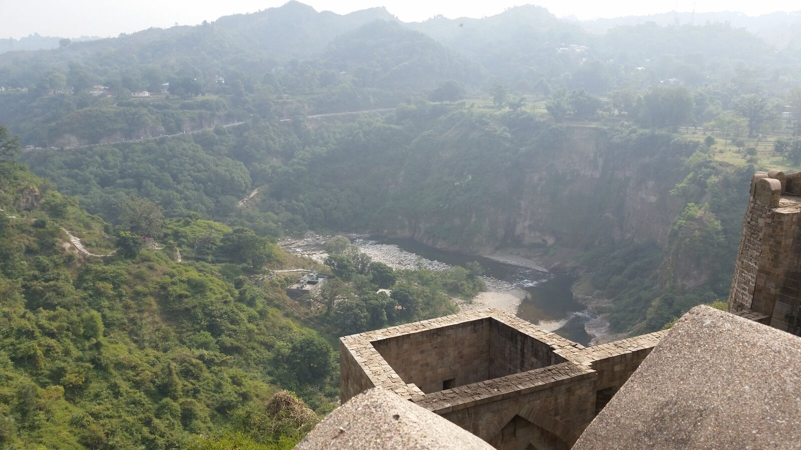

Dharamshala is the city where the Dalai Lama made his home. In 1959, he fled there, dressed as a common soldier, under the threat of an uprising by the Chinese. There are many Tibetans living there in peace.
We flew there from Delhi in a small plane. We had spent a day in Delhi with my cousin and his family before we flew out. The Delhi airport was nice -- the Dharamshala airport, however, left something to be desired.

Dharamshala is a small town surrounded by mountains. We rode in a small van from the airport to our hotel -- a journey of an hour or so. It felt like an eternity for me. I made the mistake of tracing our path on my phone and ended up with a bad case of motion sickness.

We visited the Dalai Lama's temple. It was the day before a large celebration, and as a result, there was much activity. Monks were bustling around in their robes, carrying buckets of sweets. Flowers were being hung on chairs and walls. We were told that he was in residence, but we were not fortunate enough to see him. He no longer makes casual, unplanned public appearances -- even in his own temple.

We also visited a Tibetan Art Institute. A young lady (about 20 years old) showed us around. We saw tapestries and paintings that were created in the same way they were hundreds of years ago. The gardens were beautiful. There was a Buddhist monastery at the Institute as well, and a theology school for women. The Institute was surrounded by hills and fog, but at one point, the mist cleared away and we were able to see a huge mountain -- still only a foothill, but the largest thing I have ever seen in my life.

We also visited the Kangra Fort. The Kangra Fort is a Rajput fort -- it is the largest fort in the Himalayas and might be the oldest fort in India (and there are hundreds of forts in India). It is not a beautiful place, but definitely impressive. We climbed through the fort to its highest level -- the view was breathtaking. There were sculptures carved into the interior walls, and slits for arrows cut into the exterior walls.
The Dalai Lama's website (yes, he has one) has more information about Dharamshala.